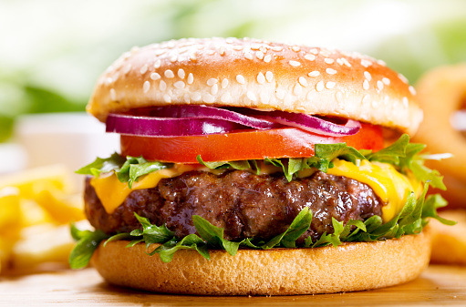

Hamburgers

Desciption
Hamburgers are one of my favorite foods. They can be as simple or as gourmet as you
want and they always hit the spot. This recipe is super easy and can be made
on a grill or on the stovetop. It makes four patties.
Ingredients
For the Patty:
- 1 lb ground beef
- 1 tsp salt
- 1/4 tsp pepper
- 1 tsp garlic powder
- 1 1/2 tsp onion powder
Toppings:
- 4 hamburger buns
- iceburg lettuce
- sliced cheese of choice
- pineapple slices
- tomato slices
- BBQ sauce
- pickles
- onions
Steps
I will be using a grill for this recipe.
- Get the grill heated up on a medium/low heat.
- Mix the ground beef together with your seasonings.
- Shape patties about 3-5 inches in diameter, depending on how thick you want them to be.
(Remember they will shrink significantly, especially if you use a high fat ground beef.)
- Prepare your toppings. Slice the cheese, tomatoes, pineapple, and onions.
Cut your lettuce and have your toppings ready.
- Grill your patties until cooked through, about 3 minutes on each side. (Again, the amount of time
it takes to cook depends on how thick your patties are.)
- Once cooked, add the cheese slices to the top of the patty and remove from heat.
- Assemble your burger to your liking and enjoy!